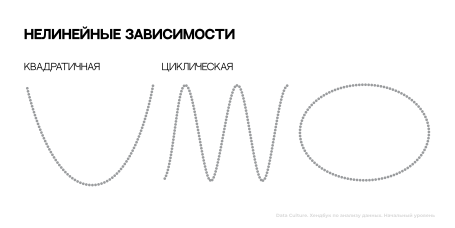

Хэндбук. Анализ данных - базовый уровень
Глава 7. Корреляция
7.1 Что такое корреляция?
Корреляционный анализ является важным инструментом для понимания взаимосвязей между различными факторами. Например, мы хотим оценить связь между расходами на рекламу ресторана и средним рейтингом или выяснить, есть ли какая-то связь между местоположением ресторана и размером чека; ответить на эти вопросы нам помогут коэффициенты корреляции
Любой из коэффициентов корреляции обладает следующими свойствами:
- Корреляция меняется в диапазоне от -1 до 1
- Чем ближе корреляция к 0, тем слабее связь между признаками.
В теории мы говорим, что когда корреляция равна 0 - это отсутствие связи, но на практике корреляция от -0.1 до 0.1 также приравнивается к отсутствию связи между признаками.
- Чем ближе корреляция к -1 или 1, тем сильнее связь между признаками
- Если корреляция отрицательная, это значит что между признаками обратная взаимосвязь: если значение одного признака А увеличивается, то значение признака В снижается (и наоборот)
- Если корреляция положительная, это значит, что между признаками прямая взаимосвязь: если значение одного признака А увеличивается, то значение признака В тоже увеличивается (и наоборот)

Корреляция не говорит о причинно-следственных связях. На ее основе мы не можем говорить о влиянии одного признака на другой, но можем говорить о направлении изменений и о силе взаимосвязи.
Поэтому при интерпретации корреляции некорректно использовать такие фразы как: "А влияет/не влияет на B" или "А является/не является причиной на B"
В зависимости от того, какую взаимосвязь мы хотим рассмотреть и между какими признаками, нужно рассчитывать определенные коэффициенты корреляции. Рассмотрим два вида: корреляции Пирсона и Спирмена.
КОРРЕЛЯЦИЯ ПИРСОНА
Значение корреляции Пирсона можно корректно интерпретировать только между двумя количественными признаками. Чтобы получить наиболее точную оценку коэффициента корреляции, количественные признаки должны быть очищены от выбросов, так как Пирсон чувствителен к экстремальным значениям; также распределение данных каждого признака должно быть симметричным и унимодальным.
Особенность корреляции Пирсона в том, что она оценивает только степень линейной связи. То есть, чем больше данные на диаграмме рассеяния похожи на прямую линию, тем сильнее будет корреляция Пирсона, тем ближе она будет либо к -1, либо к 1:
РИС 22
Важнее схожести с прямой только направление данных на диаграмме рассеяния:
- Если данные направлены вниз (на диаграммах слева):
- коэффициент корреляции Пирсона отрицательный;
- между признаками обратная линейная связь;
- при увеличении одного признака, другой будет уменьшаться (и наоборот).
- Если данные направлены вверх (на диаграммах справа):
- коэффициент корреляции Пирсона положительный;
- между признаками прямая линейная связь;
- при увеличении одного признака, другой будет тоже расти (и наоборот)
- Если мы не можем сказать, какое у данных направление (диаграммы по центру):
- коэффициент корреляции Пирсона близок к нулю;
- между признаками отсутствует линейная связь;
- между признаками может существовать нелинейная связь.
Рассмотрим подробнее случаи, когда корреляция Пирсона между признаками равна нулю. Если точки на диаграмме рассения сложились в идеальную прямую, но она идет строго вертикально или строго горизонтально, корреляция Пирсона все равно будет равна нулю, так как при изменении одного показателя другой не будет меняться.
Кроме того, данные не всегда связаны линейной связью. Корреляция Пирсона, равная нулю, говорит нам, что данные не похожи на прямую, но при этом признаки могут быть связаны какой-то другой зависимостью, как на примерах ниже:
КОРРЕЛЯЦИЯ СПИРМЕНА
Если Пирсон создан, чтобы "ловить" линейные зависимости, то Спирмен позволяет оценивать силу любых видов монотонных зависимостей, в том числе линейной.
При интепретации корреляции Спирмена мы смотрим в первую очередь на направление данных:
- Если данные направлены вниз (на диаграммах слева)
- коэффициент корреляции Спирмена положительный;
- между признаками убывающая монотонная связь;
- при увеличении одного признака, другой будет уменьшаться (и наоборот)
- Если данные направлены вверх (на диаграммах справа):
- коэффициент корреляции Спирмена положительный;
- между признаками возрастающая монотонная связь;
- при увеличении одного признака, другой будет тоже расти (и наоборот).
- Если мы не можем сказать, какое у данных направление (диаграммы по центру):
- коэффициент корреляции Спирмена близок к нулю;
- между признаками отсутствует монотонная связь;
- между признаками может существовать немонотонная связь.

Помимо этого, само значение коэффициента корреляции Спирмена, указывает нам на силу монотонности. Чем ближе он к -1 или 1, тем ближе данные к идеальной монотонной связи. Если значение равно 0, то между признаками отсутсвует моннотонная связь. Промежуточные значения (например, 0.5 или -0.7) показывают частичную монотонную связь. Частичная монотонность означает, что, в целом, с увеличением одной переменной, другая переменная в основном увеличивается (или уменьшается), но не всегда строго и последовательно. Могут быть небольшие отклонения или "шумы" в данных, которые нарушают строгую монотонность, но при этом общая тенденция сохраняется.
| Признак А | Признак В | |
|---|---|---|
| Корреляция Пирсона | Количественный | Количественный |
| Корреляция Спирмена | Порядковый | Порядковый |
| Количественный | Порядковый | |
| Количественный | Количественный |
7.2 Как расчитать корреляцию?
В прошлом разделе мы рассмотрели теоретические аспекты корреляции и то, как корреляцию можно оценить по диаграмме рассеяния. Теперь пришло время научиться рассчитывать корреляцию с использованием метода .corr() библиотеки Pandas. Для этого обратимся к нашим данным по ресторанам restaurants.csv :
| ПРИЗНАК | ОПИСАНИЕ | ФОРМАТ ДАННЫХ (`.dtypes`) |
|---|---|---|
| name | название ресторана | object |
| restaurant_type | тип ресторана | object |
| rate | рейтинг ресторана | float64 |
| votes | количество людей, поставивших оценку ресторана | int64 |
| avg_receipt | средний размер чека на двоих в ресторане | float64 |
| online_order | возможность сделать онлайн заказ (1 - есть, 0 - нет) | int64 |
| table_booking | возможность забронировать столик (1 - есть, 0 - нет) | int64 |
| cuisines_type | кухня в ресторане | object |
| area | район, где расположен ресторан | object |
Одно наблюдение - это один ресторан.
import pandas as pd
df = pd.read_csv('restaurants.csv')
df.head()| name | restaurant_type | rate | votes | avg_receipt | online_order | table_booking | cuisines_type | area |
|---|---|---|---|---|---|---|---|---|
| #FeelTheROLL | Quick Bites | 3.4 | 7.0 | 200.00 | 0 | 0 | Fast Food | Bellandur |
| #L-81 Cafe | Quick Bites | 3.9 | 48.0 | 400.0 | 1 | 0 | Fast Food, Beverages | Byresandra,Tavarekere,Madiwala |
| #refuel | Cafe | 3.7 | NaN | 400.0 | 1 | 0 | Cafe, Beverages | Bannerghatta Road |
| '@ Biryani Central | Casual Dining | 2.7 | 135.0 | 550.0 | 1 | 0 | Biryani, Mughlai, Chinese | Marathahalli |
| '@99 | Takeaway, Delivery | 3.4 | 37.0 | 200.0 | 0 | 0 | Mughlai, Biryani, Chinese, North Indian | Whitefield |
ПАРНАЯ КОРРЕЛЯЦИЯ
Корреляция между двумя конкретными признаками называется парной корреляцией.
Корреляция Пирсона
Чтобы рассчитать корреляцию Пирсона, используем следующий синтаксис метода .corr():
датафрейм['признак 1'].corr(датафрейм['признак 2']) # Пирсон
Например, мы хотим оценить степень линейной взаимосвязи между рейтингом ресторана (rate) и количеством людей, поставивших оценку (votes) - тогда пишем следующий код:
df['rate'].corr(df['votes'])С точки зрения синтаксиса неважно, какой признак мы укажем первым, rate или votes, значение корреляции от этого не изменится.
Сила этой линейной зависимости довольно слабая, так как коэффициент корреляции ближе к 0, чем к 1. Корреляция получилась положительная, значит между рейтингом (rate и количеством людей, поставивших оценку (votes), прямая линейная взаимосвязь. Это значит, что если вырастет рейтинг (rate), то, скорее всего, вырастет количество людей, поставивших оценку ресторану (votes)
Мы не можем до конца верить полученной оценке линейной связи, так как перед этим не проверили распределение признаков и не очистили данные от выбросов. При приведении распределения к симметричному унимодальному виду и очистке от выбросов значение корреляции Пирсона может как вырасти, так и стать еще ближе к 0. Но в любом случае, эти шаги позволят узнать истинную оценку линейности, что для нас гараздо важнее.
Корреляция Спирмена
Для рассчета корреляции Спирмена, внутрь метода .corr(), нужно добавить параметр method='spearman':
датафрейм['признак 1'].corr(датафрейм['признак 2'], method='spearman') # Спирмен
Оценим уровень монотонности между рейтингом (rate) и возможностью делать онлайн заказ (online_order) в ресторане:
df['rate'].corr(df['online_order'], method='spearman')Здесь также не важен порядок, в котором мы указали признаки: значение корреляции от этого не изменится.
Корреляция Спирмена получилось крайне близкая к 0 (значение корреляции менее 0.1) - это говорит о том, что между признаками отсутствует монотонная связь. Значит мы не можем сказать, что если в ресторане появится возможность заказать онлайн (online_order станет равным 1, вместо 0), рейтинг (rate) тоже увеличится, или что с ростом рейтинга (rate) появится возможность сделать онлайн заказ (online_order станет равным 1, вместо 0)
КОРРЕЛЯЦИОННАЯ МАТРИЦА
Парная корреляция показывает зависимость только одной конкретной пары признаков, но если мы хотим автоматически рассчитать корреляцию между всеми признаками в данных (представленных в числовом формате int64 или float64), то удобнее будет рассчитать корреляционную матрицу.
Любая корреляционная матрица обладает двумя свойствами:
- По центральной диагонали идут единицы. Это корреляция признака с самим собой (автокорреляция); например, корреляция А с А или корреляция B c B.
- Матрица симметрична относительно центральной оси. Это значит, что значения сверху полностью дублируют значения снизу. Это обусловлено тем, что корреляция A и B равна корреляции B и A
Чтобы рассчитать корреляционную матрицу по методу Пирсона, к датафрейму достаточно применить метод .corr():
датафрейм.corr() # Пирсон
Если нужна корреляционная матрица, рассчитанная по Спирмену, аналогично парной, внутрь добавляем параметр method='spearman':
датафрейм.corr(method='spearman') # Спирмен
Метод .corr() рассчитывает корреляционные матрицы исключительно для колонок с численными значениями (int64, float64), а в датарейме могут быть колонки и с текстовой информацией (object). Чтобы показать методу, что надо брать только численные колонки, внутрь .corr() добавляем параметр numeric_only=True:
датафрейм.corr(numeric_only=True) # Пирсон
или
датафрейм.corr(method='spearman', numeric_only=True) # Спирмен
Построим корреляционную матрицу, рассчитанную методом Пирсона, по нашим данным:
df.corr() # Пирсон| rate | votes | avg_receipt | online_order | table_booking | |
|---|---|---|---|---|---|
| rate | 1.000000 | 0.393283 | 0.381275 | 0.071802 | 0.407116 |
| votes | 0.393283 | 1.000000 | 0.337944 | 0.020665 | 0.369404 |
| avg_receipt | 0.381275 | 0.337944 | 1.000000 | -0.132518 | 0.606666 |
| online_order | 0.071802 | 0.020665 | -0.132518 | 1.000000 | -0.033091 |
| table_booking | 0.407116 | 0.369404 | 0.606666 | -0.033091 | 1.000000 |
Все свойства, о которых мы говорили выше, здесь есть. По центральной диагонали идут единицы, это автокорреляция (rate c rate, votes с votes и т.д.). Матрица зеркальна относительно центральной диагонали: например, корреляция rate с votes - это то же самое, что votes с rate, и равно 0.39.
Метод .corr() автоматически посчитал корреляции между всеми признаками в числовом формате. Например, мы видим, что в матрице представлены корреляции с признаками online_order и table_booking. Они являются категориальными бинарными, хотя данные там и закодированы цифрами 0 и 1. Мы помним из прошлого раздела, что корреляция Пирсона может быть интерпретирована только между количественными признаками, поэтому значения корреляции Пирсона, связанные с этими признаками, не стоит брать в рассчет.
Чтобы убрать ненужные признаки из корреляционной матрицы, которая с точки зрения формата данных является DataFrame, передадим список только с количественными признаками и только по ним построим матрицу:
df[['rate', 'votes', 'avg_receipt']].corr()| rate | votes | avg_receipt | |
|---|---|---|---|
| rate | 1.000000 | 0.393283 | 0.381275 |
| votes | 0.393283 | 1.000000 | 0.337944 |
| avg_receipt | 0.381275 | 0.337944 | 1.000000 |
Теперь в корреляционной матрице Пирсона ничего лишнего, и ее можно проанализировать. Между всеми признаками прямая линейная зависимость, так как корреляция только положительная. При этом сила линейной взаимосвязи между признаками довольно небольшая, так как все значения (без учета автокорреляцции) ближе к 0, чем к 1
Среди представленных признаков, самая сильная линейная взаимосвязь между рейтингом (rate) и количеством людей, поставивших оценку ресторану (votes) и равна она 0.39.
Самая слабая корреляция (0.34) между количеством оценивших ресторан votes и размером чека в ресторане (avg_receipt).
Теперь построим корреляционную матрицу, где значения коэффициентов будут рассчитаны по методу Спирмена:
df.corr(method='spearman') # Спирман| rate | votes | avg_receipt | online_order | table_booking | |
|---|---|---|---|---|---|
| rate | 1.000000 | 0.637504 | 0.327650 | 0.090420 | 0.403877 |
| votes | 0.637504 | 1.000000 | 0.472264 | 0.230633 | 0.430287 |
| avg_receipt | 0.327650 | 0.472264 | 1.000000 | -0.008403 | 0.488844 |
| online_order | 0.090420 | 0.230633 | -0.008403 | 1.000000 | -0.033091 |
| table_booking | 0.403877 | 0.430287 | 0.488844 | -0.033091 | 1.000000 |
Корреляцию Спирмена корректно интерпретировать как для количественных, так для и категориальных признаков, поэтому извлекать определенные столбцы нет необходимости.
Наиболее сильная монотонная связь, аналогично Пирсону, между рейтингом (rate) и количеством людей, поставивших оценку ресторану (votes) и составляет 0.63. Сила этой монотонной связи - умеренная.
Практически нулевые значения корреляции между размером чека avg_receipt и online_order, online_order и table_booking, online_order и rate говорят о том, что между парами этих признаков отсутствует монотонная связь.
При этом, например, у возможности забронировать столик (table_booking) и размера чека (avg_receipt) наблюдается слабая возрастающая монотонная связь равная 0.49, - это говорит о том, что если в ресторане появится возможность бронировать столик (table_booking станет 1, вместо 0) размер чека в нем тоже может вырасти (avg_receipt), или что если цены в ресторане вырастут (avg_receipt станет больше), то может появиться возможность бронировать столик (table_booking станет 1, вместо 0).